Latin Sententiae Sentences latines
Marginal texts accompanying the final dialogues of BMB Ms 1054 Textes marginaux accompagnant les derniers dialogues du BMB Ms 1054
Provisional transcription. The readings and proposed resolutions presented here remain subject to revision. Transcription provisoire. Les lectures et les résolutions proposées ici restent susceptibles d'être révisées.
Click a manuscript image to enlarge it. Cliquez sur une image du manuscrit pour l’agrandir.
Dialogue entre deux Comtois
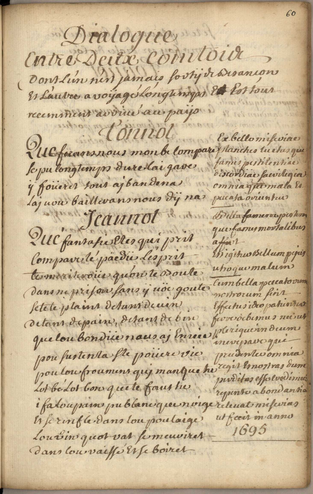
Ex bello miseriae(/miseruiae)
planches luctus que fames pestilentiae
discordiae sacrilegia omnia que mala et
precata oriuntur
Bella famem pestum
que fames mortalibus
affert
en igitius bellum peius
utroque malum
cum bella pucatorum
nostrorum firit/sirit
etfuhis ideo pahintus
feore de besnus nec ut
pleriquerin deum
inerepaue que
prudentce omnia
regit emostras dum
pirditas esse eredimus
repente abondantia
ut fecit in anno
1695
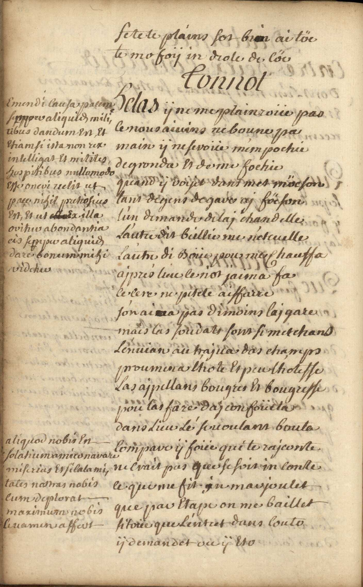
Emendi causa pacem
sinnou aliquies mili,
tibus dandum en et
stiamsi ista non rex
intelligat et milites
hospitibus nullomodo
esse oneui/oneri uelit ut
pru nihil pretiosius
est, et ut ex illa
ouitur/oritur abondantia
eis sepipu aliquies
dare bonum mihi
uidetui
aliquod nobis en
solatium amico narare
miserias es silalami,
tates nostras nobis
cum deplorat
maximum nobis
leuamen affert
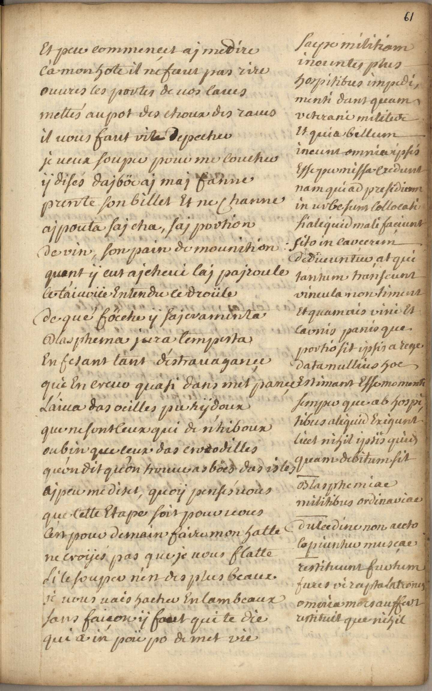
saepe militiam
ineuntes plus
horpitibus impudi,
menti dant quam
ueterani/reterani militede
et quia bellum
ineum omnian psis
esse pu missa exedunt
nam quiad presidium
in urbe sum collocati
siale quid mali faciunt
sito in caucerum
dedueun tui/tuo at qui
tantum transcunt
uincula non timent
et quam ais uini et
carnis/caunis panis que
portio sit ipsis arege
data nulluis hoc
estimant esse momenti
semper que ab hospitibus
aliquid exigunt
licet nihil upsis qu'us
quam debitum sit
----
blasphemiae
militibus ordinariae
----
dulce dine non aecto
lapiuntur muscae
---
restituunt furtum
fures ui rapta latronus
omeria mors auffert
remituit que nihil
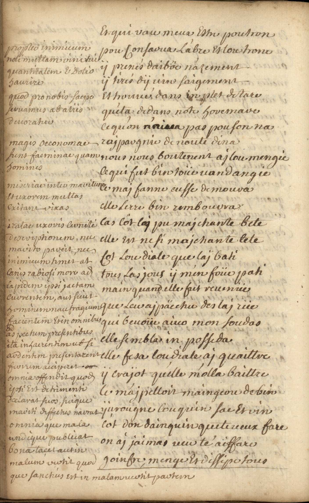
propteo inimiuum
noti multam uinitui
quantitatem e dolio
haurire
quod pro nobis saepe
seruamus ab aliis
deuoratuu
magis occonomae
sunt faeminae quam
homines
miseriae inter maritum
et uxorem multas
exitant/exitans rixas/uixas
iratae uxouis/uxoris cerniti/lerniti/ceuniti/cerniti
deseuiptionem, nec
mauito pareit, nec
inimicum timet at
canis/lanis rabiosi more ad
lapidem ipsi jactam
cuurentem aus fruit
himinem nau fragium/tragium
facientem etin omnibus
ad aspectum presentibus
ita inhacrentim ub si
audentem presentarent
feurim acciperet
omnia offendit quod
ipsi est detrimenti
declarat fuos/suos, suique
mauiti deffectus narrat
omnia que mala
undique publicat
bona tacet aut in
malum uertit quod
que sanchies est in malam uertit partem
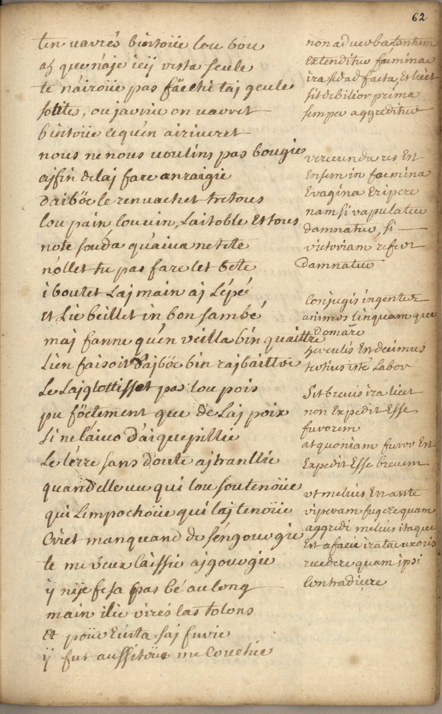
non aduertbatantum
extenditur facminae/faemina
ira sed ad facta, et luet
sit debilior prima
semper aggreditur
uerecunda us en
en sum in facmina/faemina
euagina eripere
nam si uapulatur
damnatus, si
uictoriam refur
damnatur
conjugis ingentur
animos linquam que
domare
herculis en decimus
tertius iste labor
sit breuis ira licet
non expedit esse
fauorem
at quoniam furors en
expedit esse breuem
ut melius en ante
uiperam fugere quam
aggrudi meluis itaque
est afacie iratai rixoris
recedere quam ipsi
contradiere
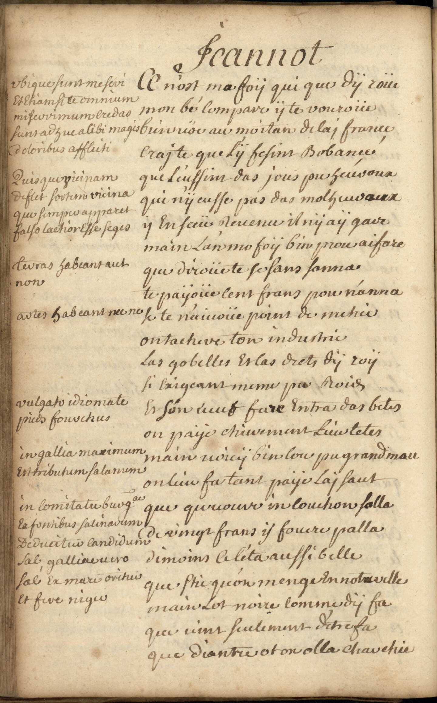
ubique sunt meseui/meseri
et etiam si te omnium
miseriui mum credas
sunt adhue alibi magis
doloribus affluiti
Quis quo gicinam
deflet fortem uicina
que semper apparet
falso lactior esse seges
teuras habeant aut
non
autes habeant nec ne
ulgatu idiomate
pieds fourchus
in gallia maximum
est tributum salanum
in comitatu burgae(abbr, bourguignon ?)
ex fontibus salinarum
de ducitur candidum
sal galliueuero
sal ex mare orituis
et fure rigus
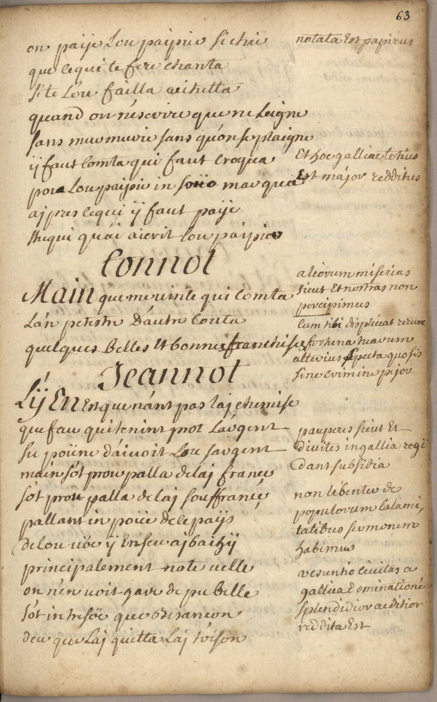
notata est papirus
et hoc galliae totius
est major redditus
aliorum miserias
eicret/sicret et nostras non
percipimus
---
cum tibi displiuat rerum
fortuna tuauum
atterius/atteuius epecta quo sis
sine crimine peiou
pauperes frerit et
diuites in gallia regi/tegi
dant subsidia
non libentur de
populorum calami,
tatibre sermonem
habimus
uesuntio ciuitas a
gallica dominationi
splendidior acdition
redditas est
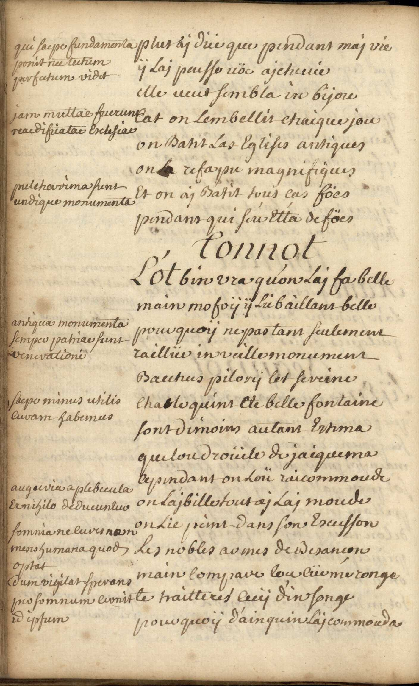
qui saepe fundamenta
ponit nec tectum
perfectum uidet
jam multae fuerunt
reacdifiatae esclesiae
preletarima sunt
undique monumenta
antiqua monumenta
semper patriae sunt
uencrationi
saepe minus utilis
curam habemus
auguria aplebecula
ex nihilo dedueuntur
somnia re lures/cures nam/nom
mens humana quod
optat
dum uigilat sperans
per sommum cunit te
id iptum/ipsum
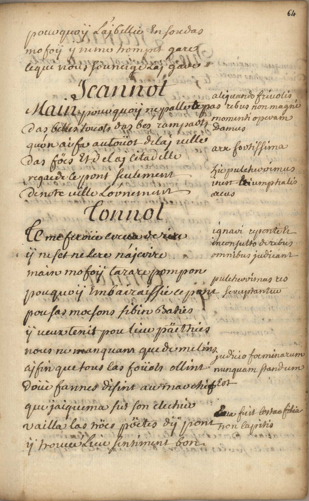
aliquand friuolis
rebus non magni
momenti operam
damus
arx fortissima
hu pulcheruimus
urest umptialis
accus/arcus
iganui repente li/si
ineonsulto de rebus
omnibus judicant
pulcheruimas tes
seruptantur
judicio foc minarum
nunquam standum
(mot taché) fuit costae/lostae filia
non lapitis
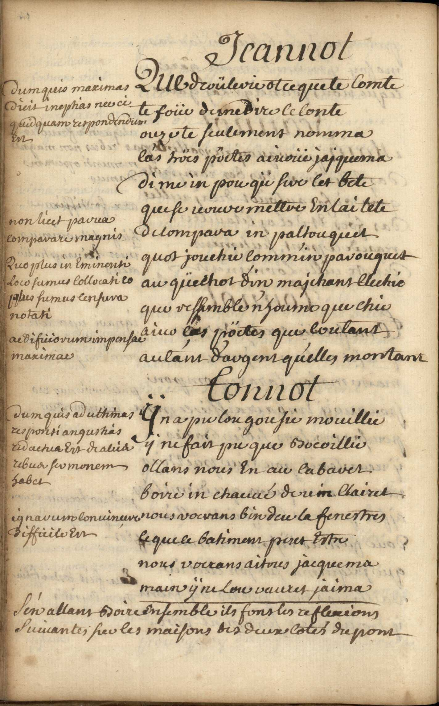
dumquis maximas
dicit ineptias ree ci
quid quam respondendum
en/est
non licet parua
comparare magnis
Duo plus in eminenti
loco sumus collocati eo/co
plus sumus censura
notati
aed fiiorum impensae
maximae
dum quis ad ultimas
responsi angustias
redactua est draleis
rebur/rebus ser monem
habet
ignarum conuinure
difficile est
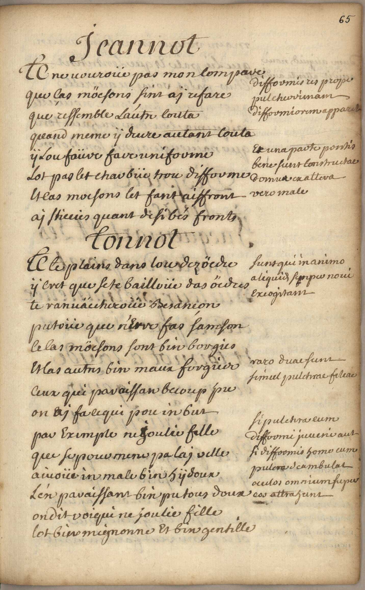
difformis res prope
pulcherimam
difformiorem apparet
et una parte pontis
bene siunt constructae
domus exattera
uero male
sunt qui manimo
aliquid semper noui
exiogitant
varo duae sunt
simul pulchrae feleae
si pulchra cum
difformi juueni aut
si difformis home cum
pulchra deambulat
aculos omnium semper
est attrahunt

Dum aliquid noui
auidit attente audimus
Dispute entre Jacquemart et les portes du pont
querelam semper
inuutiuis incipimus
quod nobis aliquid
nout etiam si puletius
rimam sir parui
pendimus

nullus uicino sua
inferior uult esse
qui nimis clamar
saepe rationem non
habit
in malo negotio
prauis confitus saepe
amicos inuoluimus
qui nihil mali fecit
e eiuitate ejici
rumere non debet
non priuatus nec a
principe nec a
magistratu debet
petere cues
faerii serenitaus/seuenitaes in
homine pulchra
qui sine cause abs se
discidir potius ferae
quam hominis tenet
parietelis nulla
politiae ad hebenda
est ratio neque ipsis
ulla est petenda
permissies

iratus de re inuuta
contendere noli
impudit ira animum
ne possit camere uerum
ciuituti omnes
aire de bemus
insolemni reg is in
urbems inuetieme
aucas edere trium,
sphales olim mos crat/erat
uesuntio urbs
antiquissima,
caesar in comentariis
pro aureliano
impeatore fuit
eruta, uud etiffter

num quam delatari
bus/fus ereden dum est
nam non ris ut sunt
referum/referunt es semper
rixas exitans
si uis uider uide
finem
non priuata licet
dare legem sep
prinupi (???)
opiniunem tuam
non inter rogato
dandum est
hÿpocrisiam potuis
quam deuu nonem
et religionems saepe
habemus et hoc ne
uideam homine de
nos ad utilitalem
nortram allo qui
tempora omnia
dirimunt et nihil
quid quam ipsis
resistere poter
omnia tempus
habet et omnia
tempus habet

quod cum ardore
cupim** friri jam
factum esse crudimus
etiam si probabile
ronsit
pontentia nostra
non debemus erga
debiles uti nec cos
conumeliis uexare
eo magis sunt decoris
quo sunt feitae in
medio urbis et ad
transitum omnium
quis est iste populus
ait pates …… fuit
matus quo que
fuit ….. et corem
cognotu agnatos

nihil plus uram
nostram exitat quam
quis auum nostrorum
memoriam obscurar
parua die et fae
nam strare sermoni
honem et licet res ad
nostrum montedat
emo lumen him dum
promisimus facienda
est
non semper dicenda
est veritas
omnibus debet
preferri/preferui deus/deces
non semper in illustri
loco natis sed in
par uulis refider/refidet
scientia
noli uituperarer si
dituperaui non uis
quod apud nor magni
momenti apud alios
parui penditur
quo plus ad utitelatem
nostramores sunt aptae
es plus sunt estimationis
dignae

abs que uigne difficile
uiuere possumus
utiles enim ad
eo/eu quendum panem
ad offam faerin dam
in hicme nec laborare
nec nostris agere/agure
negotüs possamus
sed nos semper in lecto
iacere opus effet
etigno fuctiui
liquores qui oriuntur
uinrem hominibus
jucum dissimum
multum deliclital
angusto
fistem pellens
excorde dolorem
lacti tiam exitat
dat animum
nihil in uino
nobis impossibile
uidetur
feliciorum rege
serinolentur
exiti mat

temere(/temeue) ebriosude
omnia suscipit et
licet fit res impossibilere
ad exetum per dicuro
credit
si multum quis bibit
saepe rixas amouer
et ibi ergo cernite uini
effahes
ita nobis est lignum
utile ut abs que ille nec
dare ucela uentis nec
teuram circumire
neque cam habitare
unquam possemus
ita in antiquitate fuit
magni ponderis uta
graceis machina ligno
composita fuit accepta
ut deuartata troja licet(/luit)
decemannos armis
graecorum resistisset
brurbium fuisset fere
celeburima ut narsan
hom.. et uing
non antiquae sunt
adhibendae historiae
dun nostro tempore
aliquid uidimus
magis ad mirabile
nam quis posset/posser
credere auces ut sia
dicam dapou mare ita
esse et magnas et bene
aedifiatas ut centum(lentum) et
uiginti contineant
toumenta sint que

plus quam mille
mititum habitationes
non numerando nautae
ut ipse uidi
licet materia augeat
pretiem rei aliquando
ob opere res maxime
existimatus
iam materia uictae
nunc ad formam
crimina qui
cernunt aliorum nec
sua cerment hi sapiunt
aliis desipiunt que sibi
quod cognitionire
nomae non est non
judican dum nam
rute dreitecus ne sutor
ultra crepidam

nomen magni noli
accipere si sutineret
ne quis
non armorum
splendore de bellatrus
hostis
os habet et non loquitur
olim in contractibus
nullus abs que barba
testis esse poterat
et inde barba signum/seginum
rationis et judiui esse
diament antique
inutilia habere brachie
quid hoc
esse lorica in dutus
nullum que habere
inimicum non opus
est
apaganis/apagaris boues
mutta/mectta que animalias
ut dÿ adora bantur

nihil pulchrius
quam hominis forna
nam est omnipotentis
imago
nihil que super
teuram homini est
comparandum
qui loceo/louo sui amore
flagrat pro insane
habetur
architectonicum
opus apud nos magni
momenti habemus
quod est pulcher rime/uime
uisu coram omnibus
apparere debet

omne utile bonum
et utile et delectabile
optimum
Sunt super ripam
dubÿ scitae, urbem
que bipartitam
reddunt
nouitas placet
sculptura maxime
estimatur
du quis nos deffendit
et ipsum diffendere
debemus
bipartitam addunt
urbem
uia aliorum possamus
taceret deffectus
non quae facimus
bona narrat nostra
inimicus sed quae
publicat

uim ui repellere
licet
ubi est agressei/agressio
prohibita ibi est
diffencis ulicita/ubicita
infamiis nitril
quid quam responderet
memento
ne que quam confuse
loquendum
non se jactat aliquis
dum se aliquam habere
scientiam dicit es habet
nam occulta scientia
non est scientia
scite tuum nihil est
nisi te scire hoc sciat
alter, si sciat hoc
alter scire tuum
nihil est
quod as nos attinet
est magni momenti
quod ad alios nihil
ualet
extranei quod est in
urbe curio suis semper
uidere uolunt
ab hine/hinc ducentis leucis
peheuunt ame quid
esst super tur rim
campanar iam stae
magdalenae bisuntinae

amousui impectit/impectir
quimonus quier/quir
udeas deffectus suos
Noli ad uestem tantum
apectare hominem nam
saepe super pessimam
uestem optima later/latet
anima super, splendi,
idiorem latet cruta
adulaturibus noli
fidem ad hibere nam
te decipient
---
presbiteui monitio
---
ex utilitate rerum
fit estimatio
---
horologium in urbe
maxime utile nam
opificis est regula
---
presbitere labiis orant
laici que la borane
pleps dum pro populo
presbiteo orat auar/auat
cor poris refectio nem
nunciat
arma la pienda
aut ad extinctionem
alicujus/alieujus incendii
loci muniti uicinum
esse non bonum est

non magnitudine
sed ualore superatue/superatur
hostis, nam par uulus
Dauid maximum
uicit goliam
peritissimi opificis
numquam crit/erit
aboleta memoria
hic Rodi collosseis
descriptionem cernite
ad similitudinem
apollinis
ad nauigandum
lumen utile
prodigir sae magnis
hed inis monstra gigas
nanus que duo/dur formis
contrariae/contrauiae uire gigas
ummanis nanuer
imanis home

quod ninium est
fugite paruuo/pauuo/paruo gaudere
nomento
hita mage est pupis
modico quae fluemine
fertices
quod ad monstrum
pohics/pohies quam ad
hominem dulinal/dulinat
nulli est apud nos
prehü
Corporis exigui uires
comtem nere noli
mimores herbae plus
saepe uirtutis habent
quam magnae
efiolarum siropude
grande estimatus
multum constat

armorum trophea
super portaer
elegantus posita
insignia galliae
regis earum augent
magnificientiam
alienam noli
quaerere gloriam
at in te tantum
resideat laus tua
dum abaliis asperni,
mur repente sumus
irati
quod in aliis est decoris
non nostris qualitatibus
com/eom parandum esse cunsemus

minorum nostri
meriti partum ad
astra uihimus
induit instabiles
lapiti pomponia/pomponiäs
plumas
quod que insigne
fuit maotis/martis erit
ueneris
quod est utile
majoris est pretii
quam quod utile
nec est
non lorica indutus
in pugna saepe
lutus/tutus
dum nullum
habemus inimicum
quare en sem
petimus
quod uideri ris esto/este
non ueste noscitur
heros sed faetis
seuta ni lÿpi en antiquitate nobili,
tatem accipiunt
insigniorum
uesuntionis origo

Romani proptu
inmemerabilia acta
a bisuntinis in bellis
gesta aquilam illis
concesserunt
multi rege erant
imperatoribus
subditi
ad extremitatem
terrarum uolabat
aquila Romana
Bisuntini semper
in bello fortissimi
Leste julio caesare
in commentariis
fuere Bisuntini
a romanis dilecti
non minoremalium
sequis que existimat

Si nobis est quid/quir
antiquiou honorem
ci reddere debemus
non multis/muttis ab hinc
annis lilia fuere
galliae insignia
olim butones
sed regi elouidi ut
dicitur lilia fuerunt
ë coclo ab angelo
delata nam ipse
fuit primus rex
christianissimus
muta bilitas rerum
hominum de notas
inconstantiam et
sic immuta bilitas
constantiam
dum eris foclix quae
sunt adursa caucto
non codem eur sic
respondant ultima
primis
qui se firmissimum
credit primus ille
dirimitur
quo plus ad tranritus
expositum est aliquid
20/coplus lectosus est
hominum cogitatis ut
uentum inconstans

quamuis sit modus
inconmodus tamen
ne ab aliis asperneris
neque Ridigulosum
uidearis debes utaliorum
uestem fabiriaue
tuam
quod olim uidebatur
pulchiorimum nun
ridiculosessimum
uidetur
sunt tamen ita nouitatem
spernentes utantiquum
semper sequuntur modus/modun
ad iste forsan preceptum
istud ignorant
quando eris romae,
romano uiuito more
quando eris alibi uiuito
sicut ibi
ut foeminae perpetua
est mutatio non mirum
uobis/robis uidetur siomni
momento faemina
opinion nutat
heu mihi qualia ista
nomina sinon sunt
nomina reum casta
quid ergo de ipsis met
rebus judicara debemus
mulieuis impensae
inultae

at nunc est ita in uesie
uauictas/uarictas ut us que ad
idioma extenditur
quod que olim elegans
erat nunc ridiuelum
est
sunt que in usu, les
mots a la mode (ahahah il avait la flemme de traduire en latin)
qui sic mutant nec
ullam possunt adhibere
rationem nisi hoc rerum
usum esse dicant
nanos loquenture
audirent patres
nostri si euicus la esse,
rent
fuit olim poeta
celeberrimus et a
galliae rege pensione
numitus et nunc ure
ullus sua seripta legit

dum mutatio aliquid
mitidius reddit bona
megia/nugia nihil quid quam
respondendiem
abs que nulla specie
noli huem/hecum torquere
ingenium nec timere/himere
malum mate longe
remotum
quod nulli impidit
nec ulli est oneris
muthem durat
Saepe ripam transimus
dum nihil anobis exigi
stue
in ciuitate optimis
constituta legibus
tutus quis potest/potent
incedere/inudere
quod in nobis est
aliis saepe tribuimus
nocte/noete in obscuro loco
precipué ubi quis que
transire coactus en fuces/fures
hic remanere solent possunt
qui impune furari

iam innumeri
hic fuerunt uirberati
omnes possunt estis
in locis autalatronibus
uerberari uel furari
cujus cumque sint
negotii aut conditionis/londitionis
nec ibi facile potest
comprehendi rues nam
ad saluandum muttae
ipsi sunt uiae
non debet cupere quis
setantum habere boni
quantum aliquo in
loco malum accidit
nam ita malum cupit
Si nullus esset reus
nec patibulo indi,
geremus
Latronum finis funis/fumis
mors ultima merçes
Furea/furia lapit/capit fures
hinc puto nomen habet
at multi euasere/euagerer dabit
reus his quoque funem
ratus funesto fur sine
fune perit

nullus est casus fortuitus
ita in felix ut (ingemip) sus
homo aliquod indenon
recipiat emolumentum
nec ita felix ut impruden
ad suum non possit
uertere/rertere prejudicium

officium atterius
multum narrare
memento
atque aliis cuem tu
benefueris ipse sileto
bella magis pacem ne
precer mihi suruit
utrumque
ambo patroni maes
que uenus qaemci

quo major cuiuis
major solet effet
ruina
Culmina non ualles
fulmina tottapetunt

cuelolubrum
fugias blandae
contagia culpae
quis non faedatue
si pice taetus erit/crit

judicium populi
numquam comtemp
seris/feris unus
ne nulli plaecas
dumnuis comtemnere
multos

Ut est peritissimo,
rum caraeter
Creni/Greni multa
dicere econtra est
stupidissimo rum
nihil uerbis/rerbis multis
dicere

Senes libentu bona
dans consilia, ut
ex impossibilitate
mala preben di
exempla solatium
capiant

quod fornax auro
facit hoc tribulatio
justis
rebus in aduersis
ecuta probanda
fides

plus vigila semper
nec somno deditus
esto
nam diuturna
quies uitiis alimen,
ta ministrat
Si dia uis uiuere
sanus noli ex hio/hic
stomacho/stomactio ortum
erigere
ordonner medicos
aegros or.donner
oportet
attivius sie res
attera possit opum/opem

dete alie narrent
propria sordes cit
in ore
gloria sit aceas
plus tibi laudis
erit
cumte aliquid/aliquide
laudat judex tuus
esse memento
plus alii dete quam
tu tibi endere noli
accusentte mille
licet mens conscia
recti
stat tamen et spanit/sparit
judicis ora trucis/trueis

cum rute uiuas
ne cures uerba
malorum
arbitrii nostri
non est quid
quis que loquetur
sobrictas uirtus
pulcherrima
uirginitas coelum
yeberis chorus
implet aucunum
hau superis similes
nos facit illa feris/seris

tranquilis rebus
quae sunt aduersa
cauito
rebus in aduersis
melius sperare
memento
xatus in igne fui
periturus in ignu
uicissim
siluas absumpsi
dignus in igne mori

amor sui ingeris,
osiou est quam
omnium hominum
ingenio sissimus

plena uoluptatis
tellus campania
quondam
cur hodie nomen
terra laboris habet

Stelta rogatorum
me turba moratur
erentem
guaerilat in lingua
Dum noua quis que
seca
nunquid jaquemar
noui nihil noui
scilicet in quam
aut si quid noui
nil tamen aio noui
infligat mars
multa licet tibi
uulnera non tam
mais nocet armi
tus, quam tibi
nuda uenus
nihil lactale magis
quam luxu perdere
mores
haec pestis juuenum
atra furent que
animis

sobritas sanitatis
thesaurus ram
quis cererem baehum
quis nefeiat otia
causam nequitiae
es sceleris tela/teta
cupido tui
gaudia magna
dabit mens omnis
criminis expers
huc mihi quam
pauci gaudia
magna feteur

quo maior quiuis
maor solet esset
ruina

mage aquae
liuorem gloria
soepe parit
icarus icarias
nomine fecit
aquas
medio que tutussimus
ibis

necte collaudes
necte culpauuris
ipse
hoc faciunt stulti
quos gloria uexat
imanis
si toga crassa mihi
est sparrou si trita
lacerna est
non facit egregios
purpura pieta uiros
si modo me spernis
mutate ueste redibe
quod mihi non dedoris
uestibus ipse dabis
quis diues sapiens
quis pauper stulhis
iness que

si sapio ergo
breui tempore
diues ero
quis sapiens diues
quis stultus paupeo
eriops que
ergo si diues non
ero stultus ero

Linque metum
laithi nam stultum
est tempore omni
dum mortem meluis
amittere gaudia
uitae

Tu pereunde paris
uiuentem mortua
phenix
uiperaui pariens
tu pariendo peris
hanc ego mihi uxorem
duxi tulit
alter amorem
sic uos non uobis
mellificatis apes
hos ego filiolos
fui tulis alter
honores
hic uos non uobis
midificatis aues

si tibi sint nati nec opes
hunc artibus illos
instrue que possint inspem/inopem
deffendere uitam
soepe pudicitiam mului/mulice/muliu
formosa pro pingua
eripuit castis multa que
damna dedit
in mare cornutos jaciendos/jaciendas
ponttius inquit
ponthia respondit disce
nathare prius
faemina malorum origo
faemina magnanimos
domuit per saepe leones
praeda que uctoris saepe
fuere duces
quis sansone fuit quis fortiou
hercule constat
foemincis ambos sucerebuisse
thoris
tretius in filuis gasiliscum
aud ire frementem
quam molles cantus
foemineum que melos
noxia foeminci fugias
contagia coelus
quanti causa mali
foemina prima fuit
plus tibi uicini conjux tua
plus placet illi
cuique/euique igilecu pulchream
non solet esse secum
cum tibi conjux nec tes
et sama laboret
uitan dum ducas/dulas inimicum
nomen amici
sensu intacta caret uirgo
cur nupta maritum
sensit, habet, sensum sed
ratione caret
bona sunt matrionomia
sed numquam deliciosa

foemina pacati
glitem, latet anguis
in illa
si sapis hane/hanc, ecu/ceu
pestis amara fuge
uirginitas animae
murius uictoria
carnis
portus honestatis
faneta pudicitia est

plebs speciebus
meriti dat remuneratio
nem/num non
uero merito
judicium preceps
infani judicis
index
omnia sunt longis
discutienda moris

commoda naturae
nullo tibi tempore
dicrunt/dierunt
Si contentus eo
fuerit quod
postulat usus
publica priuatis
preponat commoda
rector/rutor
nam contra justo
rege tiramus erit

non deus est autor
culpae sed exim inis
ultor
pro meritis justis
prae mia justa dabit

uire sapiende
miraculum
hodie miracula
lessant/cessant
hoc igitur nostro
tempore nemo sapit/sapis

cum que mones
aliquem nec se
uelit esse moneri
si tibi sit charus
noli desitere coeptis
disce sed adoctis
indoctus esse doceto
propaganda est
enim rerum doctrina
bonorum
quae culpare soles
ea/ca ne feceris ipse
turpe est doctori
cum culpa redarguit
ipsum

quaumque pietatis
specie passiones
nostras occultemus
uelamen semper
istud tranpicant

contra uerbosos
noli contendere
uerbis sermo dateu/datui
cunetis animi
sapientia paucis

Si uitam inspicias
hominum si denique
mores
cum culpes alios
nemo sine crimine
uiuit

mendacia semper
uitperamus ut sermoni,
bus nostris hominede
fidem ad hibeant

rex regnat solus
cur non regit
omnia solus
qui regit et/es
regitur rectius
ille regit

olim ajebat caesar
ueni. uidi uici

justum esse et charum ualidae
sont auces
nulla tiramorum et
uis duiturnna
fuit

inuncra ne cupias
uneus latet
ammus in esca/exa
nulla cauent
uisco mancra
mirus habent

quae tu comtemnes
numquam amisisse
dotebis
nam magni est
nimices causa
timoris amor

bella famem
pestem que fames
mortalibus afferi
estigitur bellum
pejor utroque
malum
omega nostrorum
mors est mars
alpha malorum
in bello distant
omega et alpha
parum

infantem
nudum cumte
natura crearit
paupa talis oruis/onus
patienta ferre
memento

quem superare
potes interdiem
uince ferendo
maxima enim
morum semper
patientia uincit

uincere cum
possis interdum
lede sodali
obsequio quoniam
dulces retinentur
aimici
litem inferre ca??
cum quo tibi gratis
hincta est
riaodium generat
concordia nutrit
amorem

zeuitutem primom
esse puta compessere
linquam
proximus ille
deo quis rationé
taceru #seit

qui cito precipitat
uelox sine pondere
uerbum
errat et emissune
non reuo carer
postest

nihil liberrtius
quam consilia damus

inuenies multos
si restibi floret
amicos
si fueris pauper
nullus amicus erit
noli homines blandos
nimium sermone
probare
sistula/fistula diclee canit
uolurem dum
decipit auceps

quod justum est
petito uel quod
uidetur honertum
nam stultum est
peteri id quod possit
jare negari

immodicus risus
non est sapientis
at index
stultitiae lepidi
sint sine dente
joci
quid non argento
quid non corrum-
-pitur cueno
qui majora dabit
munera cuitur erit

rebus in aduersis
animum submit-
-tere noli
Spem retine spes
una hominum
nec morte relinquit

rebus in aduersis
patientia uera
probatur
rebus in aduersis
uera probanda
fides
res tibi immensum
quam paruo
tempore creuit
O mega nunc
amos, o micron
ante duos